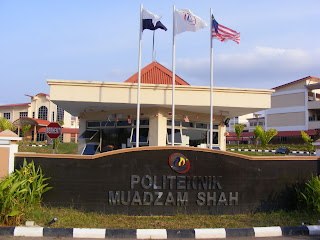

⋆୨♡୧⋆SIJIL PELAJARAN MALAYSIA⋆୨♡୧⋆

SMK TAMAN NUSA DAMAI
Smk Taman Nusa Damai is a secondary school where I have studied from form 1 to form 5.
This school is located in Pasir Gudang, Johor Bahru.
During 5 and half year (2017-2022),
many memories have been created and successes have been achieved by me throughout my studies here.
Among of them are:
Position at school: As a hygiene exco at hostel
Sports involvement: Handball
SPM additional subjects: Economic & Geographic
SPM result: 3A+ 2A 2A- 1B
Other achivements: Listed in the 30 target students for SPM out of 272 students.
⋆୨♡୧⋆DIPLOMA⋆୨♡୧⋆

UiTM KAMPUS SEGAMAT
After completing SPM, I continued my studies at a higher level.
UiTM Segamat Campus is located in Johor Bahru and also known as the "Kampus Simfoni Alam.
Course:Information management
Current semester: Semester 5
Current CGPA: 3.63
Relevant Coursework:
Business course
Technical course
Multimedia course
Mathematics course
Communication course
Achievement:
Get Dean's List Awards for 4 straight semester
Have completed internship in the 4th semester
⋆୨♡୧⋆INTERNSHIP⋆୨♡୧⋆

POLITEKNIK MUADZAM SHAH
Internship duration: 2 months (July-September)
Department: Unit perhubungan dan latihan industri
Position: Administrative assistant
Coursework:
Records management
Files management
Events management
Formal communication
Participation in technology inovation competition
⋆୨♡୧⋆MY EDUCATION TABLE⋆୨♡୧⋆
| Qualification | Location | Duration | Result |
|---|---|---|---|
| SPM | SMK Taman Nusa Damai | 2017-2022 | 3A+ 2A 2A- 1B |
| Diploma | UiTM Segamat | 2022-2025 | CGPA: 3.63 |
| Internship | Politeknik Muadzam Shah | 2 months | Completed successfully |